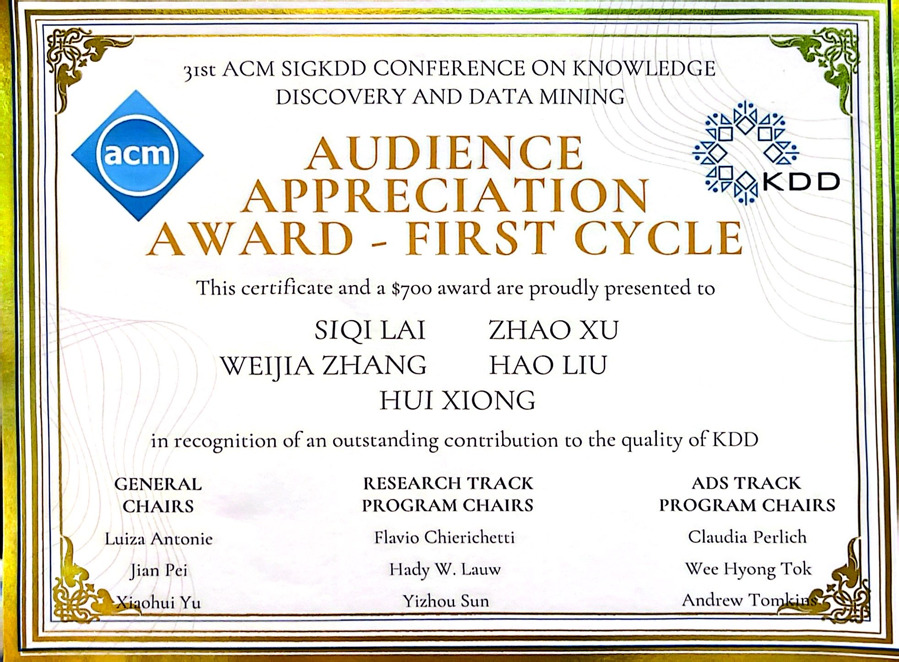
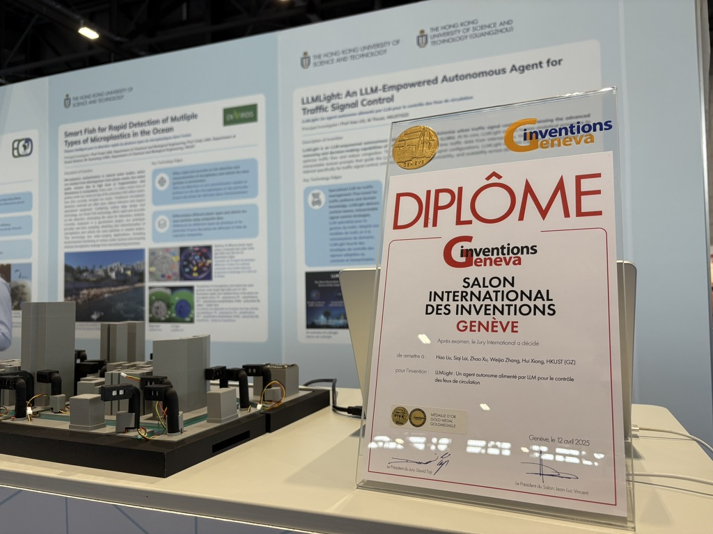
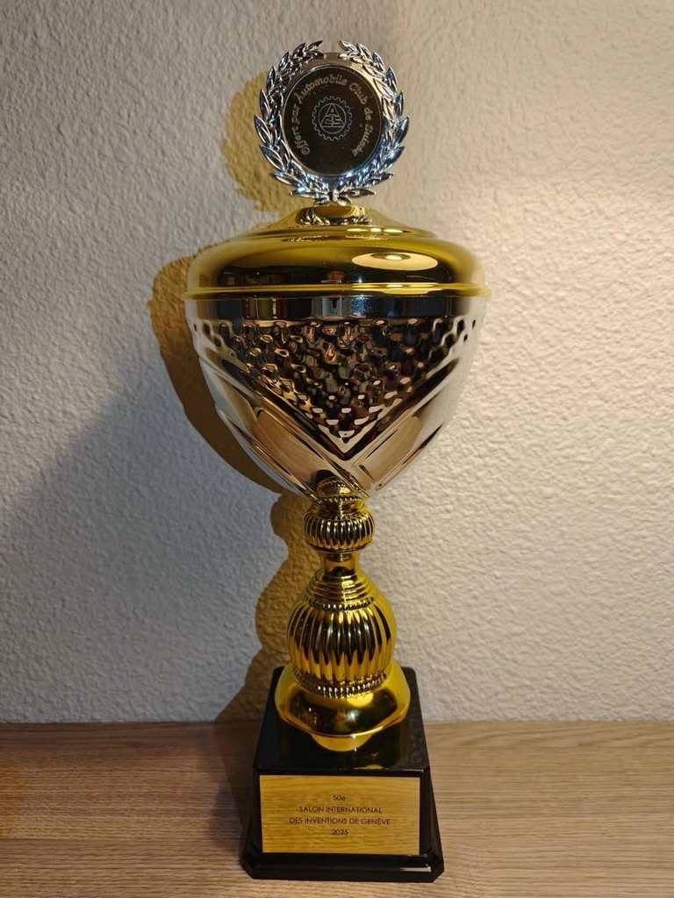

Awards
Competition Awards
-  Audience Appreciation Award of KDD'2025, ACM
-  Gold Medal, 50th International Exhibition of Inventions Geneva, Geneva, Switzerland, 2025
-  Special Award (Swiss Automobile Club Prize – ACS), 50th International Exhibition of Inventions Geneva, Geneva, Switzerland, 2025
- Second Prize, China Software Cup, computer vision-based traffic scene smart application, Nanjing, China, 2020
Academic Awards
- ACM SIGKDD 2025 Commendable Reviewer (Feb 2025)
- ACM SIGKDD 2025 Top-10% Outstanding Reviewer (Aug 2024)
- Academic Scholarship, Wuhan University (2021)
- Outstanding Student, Wuhan University (2021)